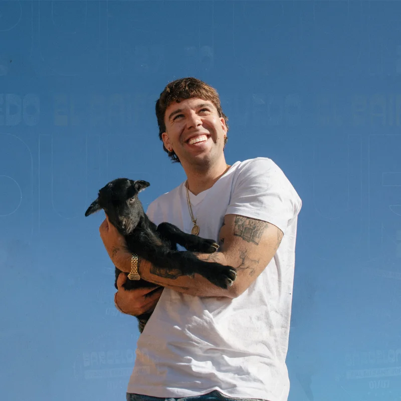
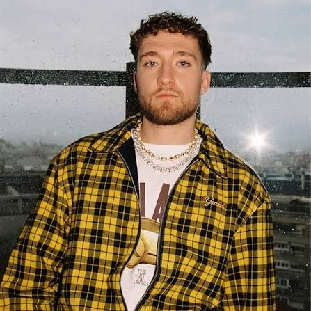
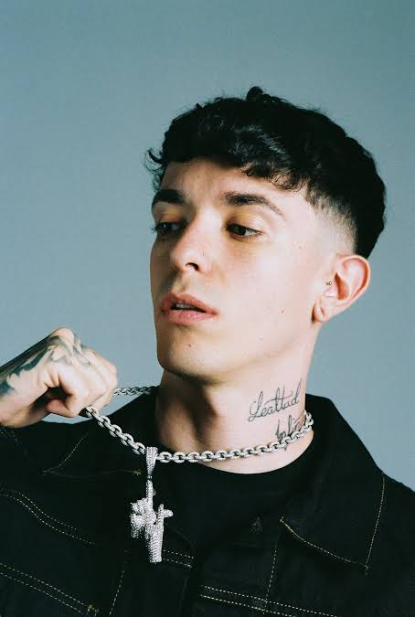

Artístas del cartel
Quevedo

Quevedo ( Pedro Luis Domínguez Quevedo), cantante y compositor español nacido en 1998, inició su carrera en 2017 y ha destacado rápidamente en la música urbana y el reguetón por su estilo único.
Se presentará en el escenario principal durante el primer día del concierto, el 20 de noviembre de 2026.
Lucho RK

Lucho RK (Emilio Roca Cáceres), cantante y compositor canario nacido en el año 2000, ha destacado en la escena urbana por su estilo versátil que fusiona reguetón y trap.
Actuará en el escenario principal durante el primer día del concierto, el 20 de noviembre de 2026.
La Pantera

La Pantera (Sergio Aimar Castellano), rapero y compositor canario originario de Gran Canaria, comenzó su carrera profesional en 2020 y destaca en la escena urbana por su versatilidad entre el trap y el reguetón.
Actuará en el escenario principal durante el primer día del concierto, el 20 de noviembre de 2026.